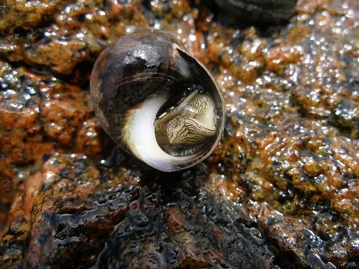

Starters & snacks · Popular in Munster and Connacht
Periwinkles with a pin
Periwinkles with a pin is made with wild periwinkles, a favourite in Munster and Connacht.

How do you make periwinkles with a pin?
Winkles boiled in seawater and picked out with a pin, the old seaside treat.
Wild ingredients
- Periwinkles (Littorina littorea): in season January to December
Watch the recipe

Video: How2Heroes on YouTube